Vias
This guide shows how to connect a PCB's top and bottom copper layers, by filling it's via holes with conductive material.
The DIY Problem
A double-sided circuit board will be milled with via holes, however those holes do not have any copper inside them. Professional PCB houses use a technique called electro-plating, which fills those holes with a copper layer. Sadly, when we make DIY boards, our vias have no copper inside them.
As an example, here is a double-sided PCB that has been milled and SMD soldered. You can see the via holes are empty, and the top and bottom layers are not connected.
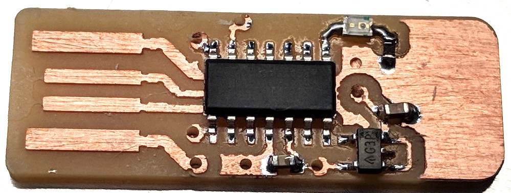
A common question is:
"Can I melt solder through the hole, and connect both sides without a wire?"
No, that might work temporarily, but if you ever need to re-heat the board (from soldering), then that solder will melt and drip out. You want to use something solid that won't drip, and that can be bent on either side so it does not fall out of the hole.
Vias with Wire
The easiest way to create a DIY via is with a solid-gauge wire.
To create the first via, strip off the insulation from a solid gauge wire, and loop it through a via.
After it is in the via, pinch the wire so that it creates bends in the wire. These bends are near the PCB, preventing the wire from ever falling out of the hole.
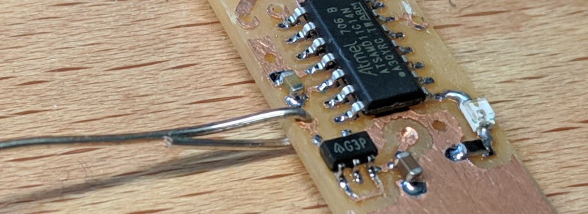Solder the bent wire to the copper.

Use a good pair of wire cutters to remove the excess wire. A good pair of wire cutters will create a flat, smooth cut.
Do not cut off too much of the wire, however. You want enough wire so that there is still a bend holding it from falling out. If you cut off too much wire, then it might be easy to fall out when re-heated.
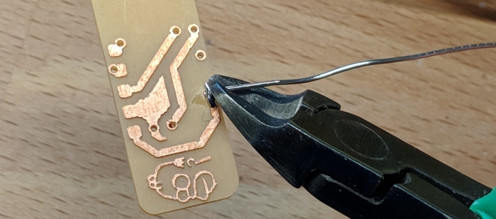The final via should have the wire bent, and soldered at an angle (so it won't fall out in the future).
The blob of cooled solder can be cut with wire cutters as so there are no sharp points.
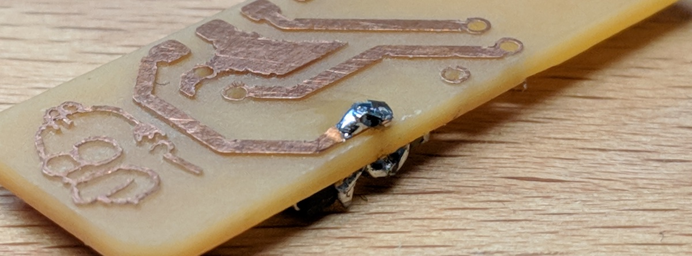You can solder your vias one at a time, or you can loop a wire through all the vias at once.
Remember to bend the wires before you solder them, so they cannot fall out after being cut.
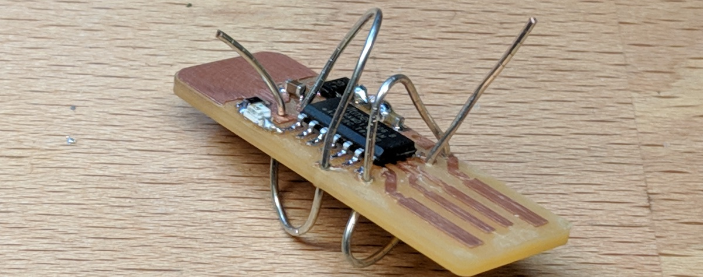When finished, the PCB will have some (not-very-pretty) solder blobs around it.
Now, the PCB's top and bottom copper layers are fully connected.
 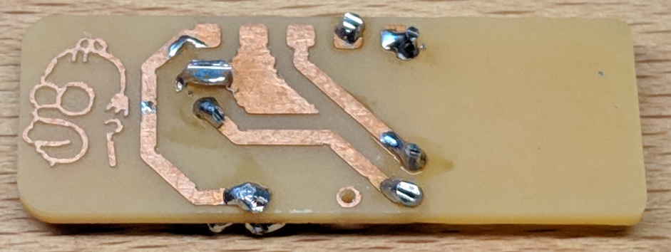
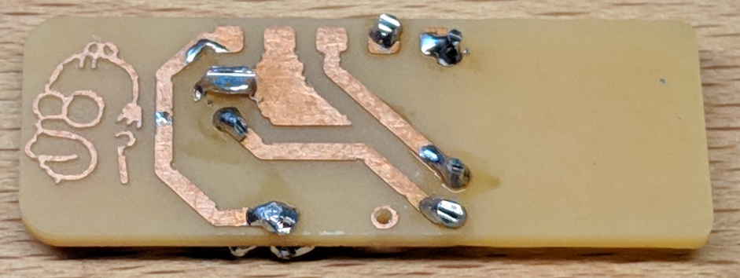
Vias with Rivets
A more advance method for creating DIY vias is to use "rivets". These are small copper tubes that fit tightly inside the hole, so that when you bent either side they grip the copper on the top and bottom layers.
The ones that I've recently found and like very much are from ebay, and can be found here. These specific rivets fit perfectly inside the via holes drilled by a 1/32" endmill (0.8mm diameter), so they are perfect for our DIY vias. These vias have an outer diameter of 0.8mm, and an inner diameter of 0.6mm.
Note that you will also need the Rivet Tool for the 0.6mm inner diameter rivets, which sadly only comes with the full set of tools so you'll have some extra. Oh well.
These rivets come in small containers, and when you handle them I strongly recommend using tweezers as they are very easy to drop and loose sight of. The picture shows my rivets, along with the tool used to flatten them.
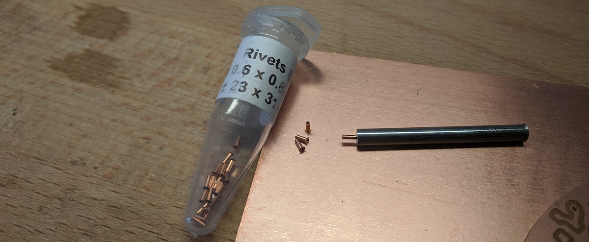The first thing that you will need is your PCB with holes drilled, plus another unused PCB board. This unused PCB board will be used as a flat surface underneath while we place the rivets and them hammer them down.
Then, using tweezers, place the rivets in your holes, so that the flat part is on the top.
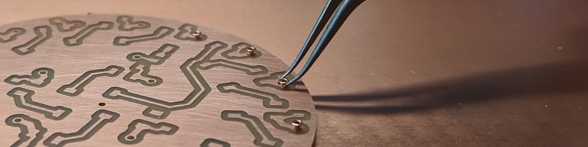Once they are all place, carefull pick up your board, so that all the rivets fall down and their flat top is preventing them from falling through the hole.
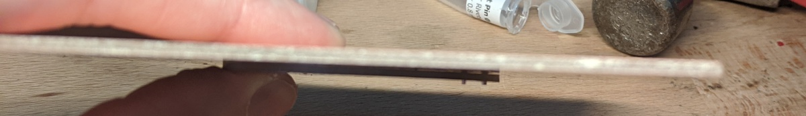Take your unused PCB board, and place it on the top of your PCB, so that the flat tops are being pressed down by the unused board. Then, flip everything over. The unused board should prevent all the rivets from falling out. Now place everything back on the table, and the unflattened straight part of your rivets should now be facing up through the bottom of your PCB.
The rivet tool should be able to fit perfectly inside the unflattened straight side of the rivets. With the tool inside a rivet, use one hand to press your PCB down firmly onto the unused board, and use the other hand to gently hammer down the rivet. It should only need a few solid hits.
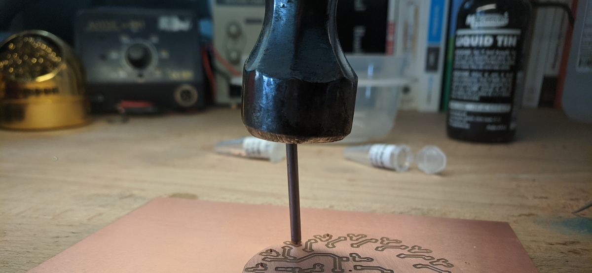What is happening as you hammer, is that the rivet tool is flattening the straight side of the rivet. However, this only works if the bottom of the rivet (the already flat part), is pressed down tightly against a flat and strong surface (the unused board).
Once you have flattened the straight side of the rivet, it should now be squeezing both sides of your PCB, touching the copper and connecting the top to the bottom. So cool!
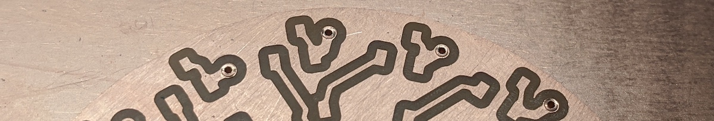If you are worried that the rivets are fully contacting the copper, you can gently hammer them flat, or wait until you have already soldered on your components, and then put a small drop of solder on them.